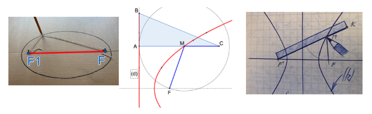
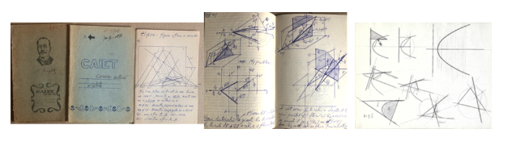
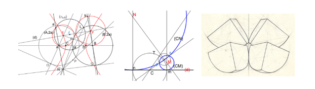
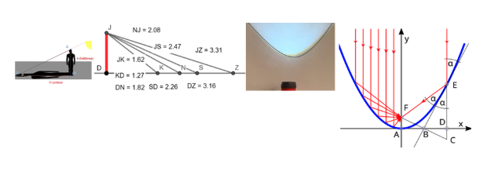

Writings
It is a journey through time that began 50 years ago, when I was studying to become an architect. I started with simple drawings, then I saw how difficult the entrance exam was. I found some books in the high school library in Câmpulung, a geometry treatise for first-year architecture students. It was written by a famous professor, Adrian Gheorghiu. Here I found the construction of regular polyhedra, using a ruler and compass, starting from the pentagon and the golden section. I took the first steps towards projective geometry, then I found another book, by M. St. Botez, Descriptive geometry, then other textbooks on projections and affinity.
I was fascinated by the constructions of the Greeks, thousands of years ago, with a ruler and compass, I discovered the mysteries hidden in the pentagon and then the Fibonacci sequence. I enjoyed the circle and its problems at school, in geometry lessons, then I went through Țițeica's Geometry, which I solved twice.
From the circle, I got to the ellipse, then I took the difficult but fascinating path to the parabola and hyperbola. I made a beautiful ellipse out of thick plastic, like a glass, built with points, I cut it out of cardboard, then I sanded the shape of the glass with sandpaper. That's how I made them all, one by one, and I researched all their properties, related to geometric loci, tangents, intersections with straight lines, optical properties and finally, in space, the section cone and Dandelin's theorems.
Areas and regular polygons have fascinated me since I was little, in the 6th grade, when I was 12 years old. Then Archimedes amazed me with his art and mastery, with which he calculated Pi and the sector of a parabola. I made the calculations on a notebook with squares, then I would build them exactly with plastic shapes. Finally, I transferred them to a large A4 format, where I would draw them precisely, without corrections.
That's how I came to discover the mysteries of conics, which are not taught in schools. Who knew about radical axes, circles tangent to 3 circles, or a regular tetrahedron in which 4 spheres are inscribed?
At the same time, I was learning projective geometry, created by Gaspard Monge, one of the scientists who always accompanied Napoleon. I found the geometric projections and transformations, lines and planes, intersections of solids, all solved on my wooden table, which I found in the workshop of my uncle, Alexandru Donici, a great painter in Câmpulung. I went far and filled 10 notebooks with calculations, drawings and projections, all learned after school hours or during holidays, when my friends were playing in the hills and forests and were happy to be out of school. I had a spartan, army schedule, I would sometimes get up at 5 in the morning and study for 12, 14 hours until midnight. During breaks, I played tennis with 2 racquets made of plywood boards… I couldn’t find balls, because we were under communism and poverty was everywhere. I had time to study, and I was happy…
Something about conics… They are fascinating, because they hide mysteries, still unknown… we always see them around us, as we open the door and go out into the street. Car wheels, steering wheels, bicycles, we all see ellipses, then parabolas, headlights, which illuminate us at night and mirrors, which transmit or capture signals from afar.
The shadow hides the Pythagorean theorem and therefore equations of degree 2, like all conics. I found the hyperbola and under its graph, the hyperbolic functions. If we played with a candle on a wall, at night we would have all the conics, one by one, which changed with the inclination of the light towards the wall. Planets and atoms run on ellipses, the seasons also come from Kepler's laws, related to ellipses.
These are just a few thoughts that I put into this little book, I carried with me, all the notebooks and sketches, across the seas and countries and thus I fulfilled my dream, that my work would further illuminate all seekers of beauty and truth.